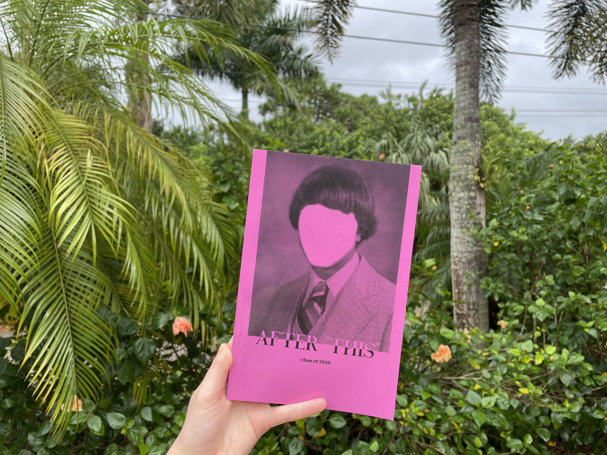
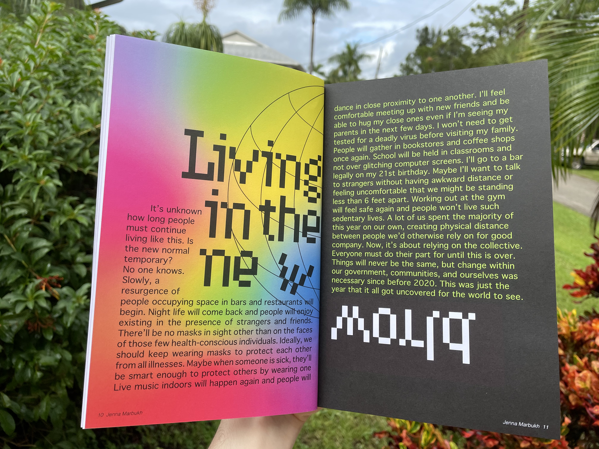
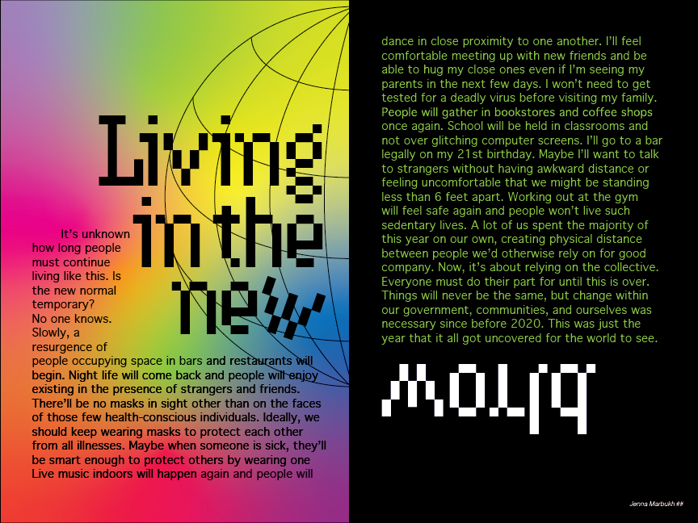
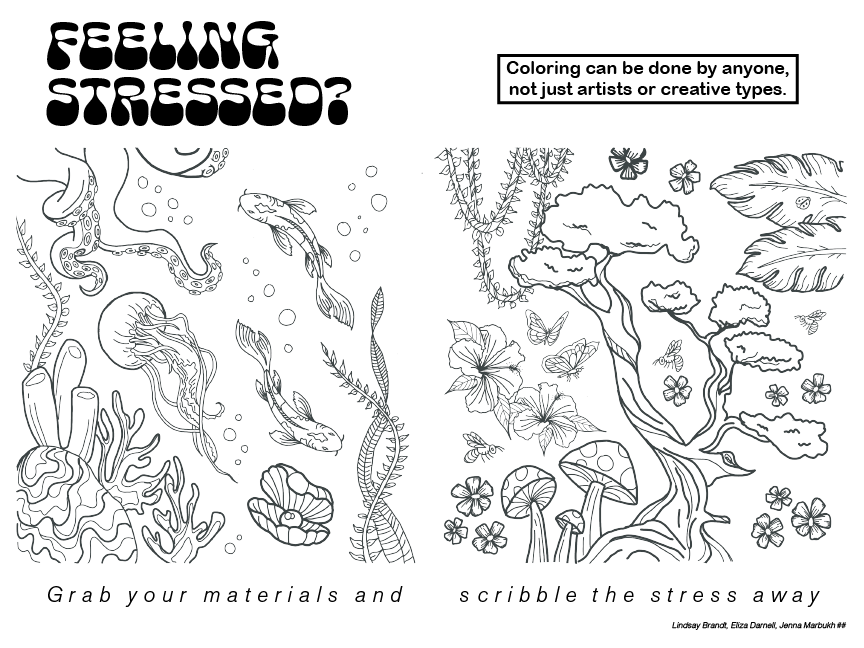

Magenta Cohort Book
Tools: Adoble Indesign, Adobe Photoshop, Adobe Illustrator, Blurb.com (for printing)
Completed during fall semester of 2020, my graphic design cohort, also known as the magenta cohort, collaborated to create a book consisting of our individual outlook or hope for the future when the world was in a time of struggle and fear. Reading back on what I wrote makes me feel a little bit sad for my past self, but I'm so grateful that I made work based on my personal feelings during that time of my life because I know that I'll always be able to look back on it.
Magenta book cover:
Documentation photos taken at my parent's house in Bonita Springs, FL.

My contribution:


Group spread:
I worked with Lindsay Brandt and Eliza Darnell to create this interactive page within the book.
